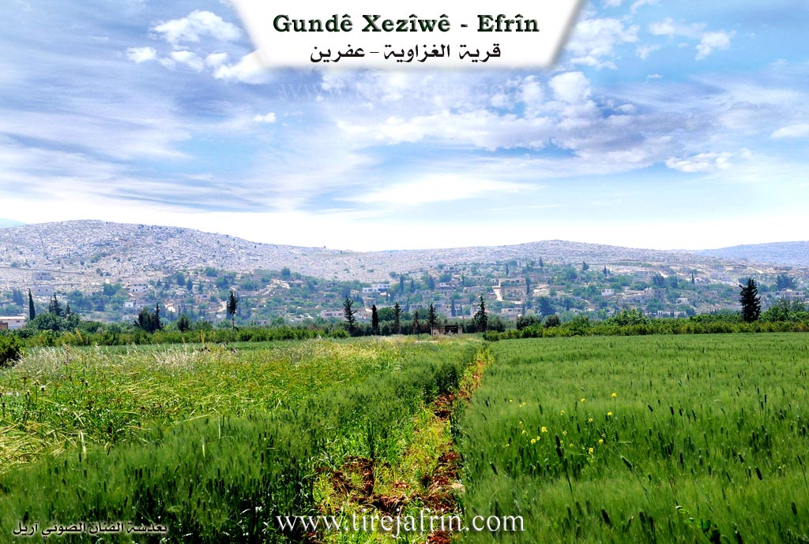
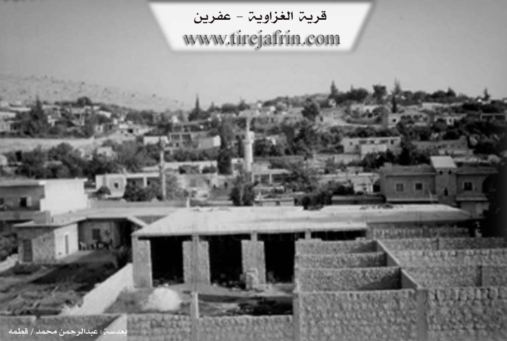

General Information
Nahiya (Subdistrict)
Efrîn
Also Known As
Xezîwê, Ĝezîwê, غزاوية, غزاويه
Families, Clans, etc.
Mala Elî Axa, Mala Kîfo, Mala Mistefa Axa, Mala Silêman, Mala Tatar, Mala Ĝez, Mala Şêx Husên

Photos


Basic Information about Xezîwê
Source: Tirej Afrin
Etymology: Derived from a Kurdish proper name; there are families in the village and neighboring villages named Mala Ĝez or Ĝez
Foundation Date/Period: Approximately 500 years ago
Hills: Çiyayê Lêlûn, Çiyayê Seman, Tûr, Şêx Berekat
Other Landmarks: Wadiyê Efrîn, Deşta Cûmê, Wadiyê Şêx Riqaq
Summaries
I. Summary from TirejAfrin Site (English) of Xezîwê
The following is stated in the book جبل الكرد (عفرين) دراسة جغرافية Çiyayê Kurmênc (Efrîn): A Geographical Study by د. محمد عبدو علي Dr. Mihemed Ebdo Elî:
Ĝezawiyê / Ĝezw
(2176 inhabitants - 102 houses - 18 km - 240 m)
I believe the name is derived from a Kurdish proper name, as there are families in the same village and some neighboring villages called Mala Ĝez, Ĝez, etc.
It is a large and prosperous village, located on the northern slope of a height of Çiyayê Lêlûn with an elevation of 355 meters. There are those who follow the Êzîdî faith, constituting about half of the village's population, and Şêx Husên, the Sheikh of the Êzîdî in the Efrîn region, resides there. The village contains shops, a fuel station, and some beautiful buildings extending along the paved road passing through it.
The following is stated in the book عفرين .... نهرها وروابيها الخضراء Efrîn... Her River and Her Green Hills by the writer عبدالرحمن محمد Ebdulrehman Mihemed from the village of Qetme:
Ĝezawiyê is a village in Wadiyê Efrîn and Deşta Cûmê, administratively belonging to the villages of the center and region of Efrîn and the governorate of Heleb. It is a large village located on the lower northern slope of Tûr mountain (355 m), at its convergence with the flood plain of Wadiyê Efrîn. Its lands slope towards the northwest of the Efrîn river valley.
It is bordered to the north by a wide, fertile agricultural plain, the Efrîn river valley, and the village of Kefer Zît north of the river. To the south, it is bordered by the Çiyayê Seman chain and Şêx Berekat. To the west, it is bordered by Wadiyê Şêx Riqaq, the plain, and the village of Şêx Dêr. To the east, it is bordered by the Çiyayê Seman and Çiyayê Lêlûn chains, and the crossroads of Efrîn-Daret Ize-Heleb, Berad, Baê, and Burc Ebdale.
The number of houses reaches approximately 200 to 250, and the age of the village, according to the narration of its residents, is approximately 500 years. An electricity network is available, as well as drinking water from the village well on the eastern side. It has two schools (primary and preparatory), a mosque, and telephone lines. A municipality house was established there, which includes a group of villages: Şêx Dêr, Îska, in addition to Ĝezawiyê.
Its old houses are made of stone and mud with wooden roofs, while the modern ones are made of stone and reinforced concrete, spread along the sides of the Riya Heleb-Efrîn-Celemê-Daret Ize (Aleppo-Efrîn-Celemê-Daret Ize road). A paved road connects it, passing through its center, to several neighboring villages. Its residents work in cultivating irrigated and rain-fed lands. Its most important crops are cotton, grains, sugar beets, vegetables, pomegranates (which are widely spread), apples, walnuts, peaches, and pears. Water comes to it from the Efrîn river and artesian wells. Residents also work in raising sheep, goats, and cows.
There is a spring of water at the end of the western slope of Çiyayê Seman overlooking Wadiyê Efrîn to the east of the village of Ĝezawiyê; it is 17 km away from Efrîn towards the southwest, and its water flows northward through the village's orchards. The state also dug three artesian wells east of the village to feed the network that irrigates the village and its crops.
Among its most important families are: Mala Mistefa Axa, Mala Elî Axa, Mala Şêx Husên (Sheikh of the Êzîdî sect), Mala Kîfo, Mala Tatar, and Mala Silêman.
Among those with higher degrees in the village is Mr. Mihemed Enwer Elî (Master's in Philosophy) and many holders of university degrees in various specializations. Among the social figures in the village are: Şêx Husên, Mr. Mihemed Enwer Elî, and Mr. Ziyad Silêman. The village Mukhtar is Mr. Semîr Mistefa.
The village of Ĝezawiyê is a socially cohesive village. There are also more than 150 families from Ĝezawiyê in countries around the world (Europe).
Sources:
- Book: جبل الكرد (عفرين) دراسة جغرافية Çiyayê Kurmênc (Efrîn): A Geographical Study by د. محمد عبدو علي Dr. Mihemed Ebdo Elî.
- Book: عفرين .... نهرها وروابيها الخضراء Efrîn... Her River and Her Green Hills by عبدالرحمن محمد Ebdulrehman Mihemed from the village of Qetme.
Preparation and execution:
- Manager of Tirej Efrîn website: Ebdulrehman Hacî Osman
- 20/12/2013
II. Ax û Walat Book 1
THE VILLAGE OF XEZEWÊ
16.2.2016
The village of Xezewê is affiliated with the Şêrewa district of Efrîn canton, located about 17 km south of the city of Efînê, and at the same time is one of the villages of the Cûmê plain.
The name of the village comes from the name (Xeza Menda). This is also the name of an old woman from the village from the Şêxler family, which is known by that name as one of the main families in the village.
All the residents of the village were formerly Êzdî, but after the Ottoman occupation, many families were forced to become Muslim. Also, Êzdî Kurds live alongside Muslim Kurds
128
and an Arab family in the village in brotherhood and equality, and in all sad and happy activities and occasions, they support each other, so much so that one can hardly recognize any religious difference or separation among them.
The main families currently living in the village are:
The Şêxler family was the first family to settle in the village of Xezewê, the family of Elî Axa, Silêman, Kêfo, Kurdo, Îslim, Hesenkê, Kedê, Mihko, Nîsanê, and an Arab family named Hec Ebid live in the village.
The village of Xezewê looks like a modern village, but its history is ancient, so the village is large, with about 350 houses and 3000 people living there. Due to the size of the village, there are all kinds of household goods shops, even a pharmacy, so the villagers do not need any other village and find all their necessities in these shops.
The village of Xezewê, like many surrounding villages, is famous for pomegranates, and the entire surroundings of the village are filled with vegetable gardens and orchards with things like peppers, eggplants, beans, gourds, pumpkins, tomatoes, cucumbers, lettuce, garlic, onions, fava beans, etc., and fruit trees like apples, peaches, apricots, pears, walnuts, along with olive groves. In addition to these, the villagers plant fields of wheat, barley, lentils, chickpeas, fenugreek, and tobacco, which adorn the surroundings with greenery. So the residents
129
of the village rely on agriculture for their livelihood and sell their products in the markets of the canton.
Some families also own livestock like sheep and goats and sell their products in the surrounding villages and markets, and they make their living from it.
It is worth mentioning that all the courtyards and houses of the village are spacious and filled with trees, flowers, and blossoms, and the main roads within the village are all paved and clean.
The village of Xezewê is located at the foot of Qenterokê mountain, which is part of the Lêlûn mountain range, and it appears as if the mountain embraces the village.
The Sem’an Citadel is located about 4 km northwest of the village. After the citadel, there is the shrine of Şêx Berekêt, and the people of the village from both Êzdî and Misilman religions visit this shrine and make sacrifices for their intentions, illnesses, and the fulfillment of their wishes. The festival of Çarşema Serê Nîsanê is also celebrated there.
An ancient Êzdî shrine in the village named (Şerfedîn) existed, and its location is still known. It was considered a place of the Êzdî elders, but now it has become a shrine for both the Êzdî and Misilman peoples.
In the past, there was a spring named (Kaniya Xezewê) below the village, and all the villagers irrigated their fields
130
from it, but now its water has decreased, and the villagers rely on the water of the Birc Evdalo Dam for irrigation, which was built on the Efrîn River in 1998, and water channels have been extended to the surrounding fields.
In the village of Xezewê, there is a dance group named (Koma Zîlan) which has been continuously active since 1990, performing at national and religious holidays and occasions and presenting their works.
To the east of the village is Lêlûn Mountain, to the north is the Efrîn River and the village of Keferzîtê, to the west are the villages of Şadêrê and Îska, and to the south is the village of Dêr Sem’an.
There is one primary school and one middle school in the village, as well as a mosque.
There are many intellectuals from the village, including doctors, pharmacists, lawyers, engineers, teachers, and many who have graduated from university.
One of the famous folk singers of the region from this village is known by the name (Umerê Cemlo). He was born in the village of Xezewê in 1915. He practiced the art of folk singing for about 20 years, and he learned to sing and the art of folk singing from his uncle (Ehmed Kalo) from Bircikê Tepê or Bircilqas and from his mother (Kilê). He also sang songs at parties, gatherings, and weddings.
131
Umerê Cemlo passed away in 1981 and is buried in the cemetery of Xezewê.
He sang many folkloric songs and in this way preserved the culture of his people. Some of these songs are: Welat, Eyşa Îbê, Delal, Memê Alan, Siyad Ehmed, Bê mal, Zêneb, Besna Xêlî, Hemê Hacî, Êma Hemo, Gundê Qenterê.
He sang a national song called ((De rabin)), which was later taken and recorded by the artist Şivan Perwer.
It is worth mentioning that the tambur player of Çiyayê Kurmênc, who was famous by the name Adîkê Necar, was from the village of Xezewê. He later went to Basûtê and continued his life in the village of Kora until his passing.
Possible Village Name Meaning of Xezîwê
Derived from a Kurdish proper name, as there are families in the same village and some neighboring villages called Ĝez Mala, Ĝezê...
Source: TirejAfrin Site
V. Links
- Tirej Afrin:
https://www.tirejafrin.com/site/kura%20afrin%20markaz-%20xezawe.htm - Ax û Welat:
https://www.youtube.com/watch?v=2XMWyPVpdKc - Jawlat:
https://www.youtube.com/watch?v=p9Fhp1wr0KU - Link:
https://www.youtube.com/watch?v=whC_AcmUWCg - Local FB page:
https://www.facebook.com/Xeziwe - Video:
https://www.youtube.com/watch?v=pwWOU4h69b8 - Link:
https://www.youtube.com/watch?v=-uzKiUVHA_s - Link:
https://www.youtube.com/watch?v=-dFujDY1ERc - Link:
https://www.youtube.com/watch?v=3nuVmGGGygE - Link:
https://www.youtube.com/watch?v=7c-b_WSFYDw